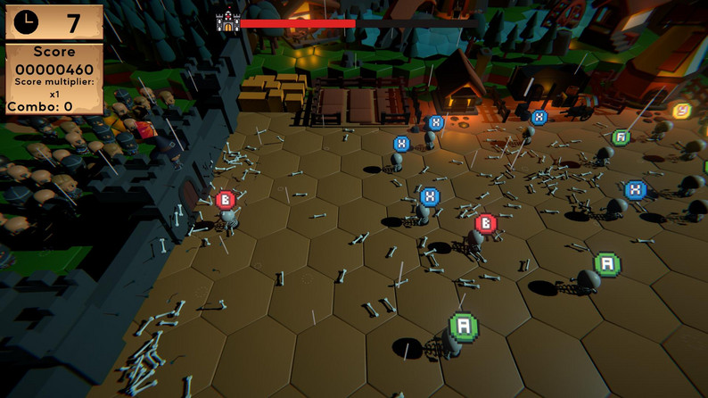
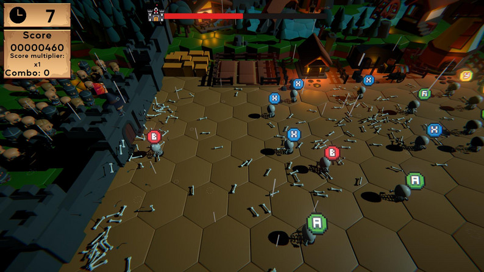
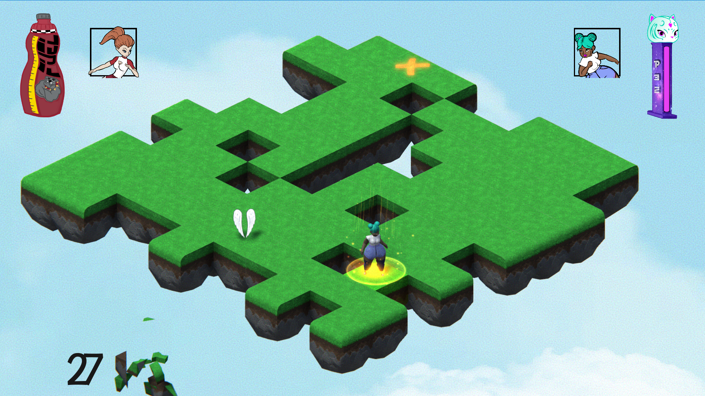
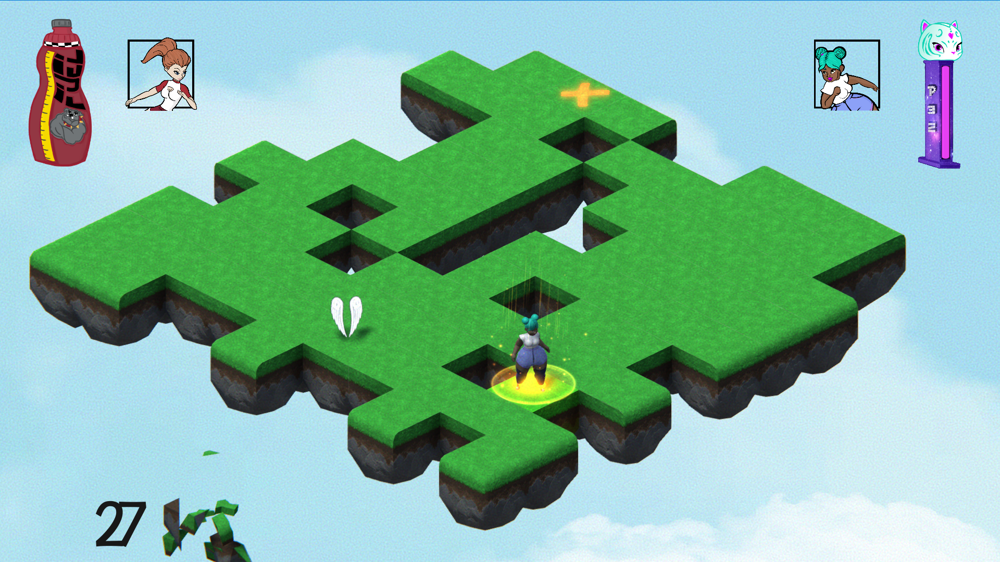

Astra
A personal project in which I aimed to take on the challenge of developing a highly ambitious game. It is still in development.
We use Zenject as our dependency injector, which has allowed us to scale the code and optimize the use of services in a very simple way. Additionally, we have also implemented Unity Analytics for future use, to evaluate which would be the best direction to take the development based on player performance.
Multiple possibilities have been implemented for player control at the level, offering a dynamic, fast-paced, and fun gameplay experience.
The damage system has been designed so that we can easily control the properties of each attack: damage value, whether it can be countered, and so on.
The save system is based on encrypted JSON files and is centralized, making it very easy for developers to add new information to be saved.
Bread of the Wild


In Bread of the Wild, you help Bro advance on his ninja training by delivering those breads to an unknown receiver through a sequence of levels based on platforms and obstacles avoidance. The game is based on games like "Celeste", "Super meat boy" and "I wanna be the guy".
In addition to character control, other elements I would like to highlight are the interactive objects you can find inside the game. You can easily create new ones making it possible to add new levels really quickly.
The game can also be played on Android devices and will son be available on Google’s Play Store.
ScriptableObjects has greatly improved project optimization. They have been used on the audio, interactions and levels systems.
Don't Get Any Closer
 

GameJam project. The aim of the player is to avoid skeletons to reach the castle doors by tapping the inputs they have on their head. The limitation we had to implement is the gameplay coulnd't last more than 20 seconds.
I was mentoring a junior developer during the project. I am really proud of how he improved his skills and how we worked together to make this game possible.
Geometric Wars
This is a personal project. As soon as I finished this master degree and outside of work I wanted to develop my own games and this is the first one that came out on Play Store.
The player controls a spaceship that has to protect its planet from an unexpected attack which origin is completely unknown.
I was really interested on creating a videogame with fast and enjoyable matches. I decided to release the game on Android because it is easier to reach more people.
I feel especially proud of enemies’ behaviour. The way it was created makes it very easy to create new ones without coding. Including Google’s API is also something I am proud of.
Guys That Run
GameJam project. Guys that Run faces two players that would have to fight to be the last one alive. As they run infinitely, they will have to use their blasters to beat the other player and get the victory.
But there is more! Pay attention to the obstacles as they can make you fall and lose the game!
Winner of the best game prize because how enjoyable is it to play, its mechanics and the team work made it possible to create a complete game.
High Five!
 

Two players have to fight in order to be the last one standing over the platform. There are two characters full of personality available to use in order to make the other player fall off the platform. But there is more. The game includes several power ups and players will also have to pay attention to its environment, as it will be disappearing as the time goes by. Choose between two levels and and show you are the best.
This game was developed during a GameJam, an event where several groups of people have to develop a videogame in 48 hours. High Five was awarded the prize for the best game and art direction, making it the winner of this game jam. The game was developed by a team made of six people, what improved my skill when working as a part of a development team.